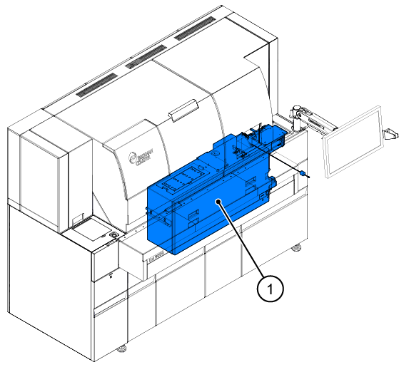

Replacing the Reagent Storage Module (RSM) Barcode Reader Camera
This topic includes information about how to replace the barcode reader camera for the reagent storage module (RSM).
Safety Reminder
Servicing the DxI 9000 instrument involves potential risks for pinch and puncture, electrical shock, and exposure to hazardous materials. You must mitigate these risks by taking appropriate countermeasures. See Safety for more information.
Location

| 1 | Reagent storage module (RSM) |
Recommended Tools
- M2.5 hex screwdriver.
To replace the reagent storage module (RSM) barcode reader camera: